정보통신기사 (2022-10-08 기출문제)
1과목: 정보전송일반
1. 스마트안테나(Smart antenna)는 공간신호를 인식하여 스마트 신호처리 알고리즘을 사용하는 안테나 배열을 의미한다. 다음 중 스마트 안테나 종류가 아닌 것은?
- Multiple Input Multiple Output antenna(MIMO)
- Switched beam array antenna
- Adaptive array antenna
- Single Unput Single Output antenna(SISO)
(정답률: 81%)

2. 100[mV]는 몇 [dBmV]인가? (단, 1[mV]는 0[dBmV] 이다.)
- 10[dBmV]
- 20[dBmV]
- 30[dBmV]
- 40[dBmV]
(정답률: 73%)
3. 단파 통신에서 페이딩(fading)에 대한 경강법으로 적합하지 않은 것은?
- 간섭성 페이딩은 AGC 회로를 부가한다.
- 편파성 페이딩은 편파다이버시티를 사용한다.
- 흡수성 페이딩은 수신기에 AGC 회로를 부가한다.
- 선택성 페이딩은 주파수 다이버시티 또는 SSB통신방식을 사용한다.
(정답률: 55%)
4. 구내통신선로설비란 통신사업자설비와 건물 내의 가입자 단말기 간을 접속하여 통신서비스가 가능케 하는 건물 내 정보통신 기반시설을 말한다. 다음 중 이러한 구내통신선로 기술기준에 대한 국제표준은 어느 것인가?
- ISO/IEC 96000
- ISO/IEC 29103
- ISO/IEC 11801
- ISO 20022
(정답률: 72%)
5. PDH(Plesiochronous Digital Hierarchy)중 북미방식인 T1의 전송속도는?
- 64[Kbps]
- 1.544[Mbps]
- 2.048[Mbps]
- 6.312[Mbps]
(정답률: 78%)
6. 공통선 신호방식은 별도의 신호 전용채널을 통해 신호정보를 다중화하여 고속으로 전송하는 방식이다. 이때 사용되는 다중화 방식은 무엇인가?
- FDM
- TDM
- CDM
- WDM
(정답률: 55%)
7. 문자방식 프로토콜에 사용되는 전송제어문자가 아닌 것은?
- ENQ
- DLE
- REG
- ETB
(정답률: 68%)
8. 다음 중 전송로의 동적 불완전성 원인으로 발생하는 에러로 알맞은 것은?
- 지연 왜곡
- 에코
- 손실
- 주파수 편이
(정답률: 74%)
9. 다음 중 전자 계산기의 기억 요소(Memory element)로 사용하는 장치가 아닌 것은?
- Disk
- REgister
- Flip Flop
- Inverter
(정답률: 78%)
10. 다음의 구형파 신호에 대한 실효값(rms)은?
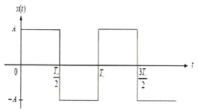
- 0.5A
- A
- 1.5A
- 2A
(정답률: 73%)
11. 다음 중 전자파(전파)에 대한 설명으로 틀린 것은?
- 전자파를 파장이 짧은 것부터 순서대로 나열하면 감마선, x선, 적외선 등이 있다.
- 전자파는 파장이 짧을수록 직진성 및 지향성이 강하다.
- 전자파는 진공 또는 물질 속을 전자장의 진동이 전파함으로써 전자 에너지를 운반하는 것이다.
- 전파는 인공적인 유도에 의해 공간에 퍼져나가는 파이다.
(정답률: 79%)
12. 다음 중 정보를 유지하기 위한 래치(Latch)회로나 시프트 레지스터(Shift register)에 주로 사용되는 플립플롭은?
- D Flip-Flop
- T Flip-Flop
- RS Flip-Flop
- K Flip-Flop
(정답률: 61%)
13. 다음 중 광섬유 케이블의 분류 방법이 다른 것은?
- 단일 모드 광섬유 파이버
- 계단형 광섬유 파이버
- 언덕형 광섬유 파이버
- 삼각형 광섬유 파이버
(정답률: 76%)
14. 다중입출력(MIMO: Multiple Input Multiple Output)안테나의 핵심기술이 아닌 것은?
- 핸드오버(Handover)
- 공간다중화(Spatial Multiplexing)
- 다이버시티(Diversity)
- 사전코딩(Pre-coding)
(정답률: 60%)
15. 대류권파의 페이딩이 아닌 것은?
- 신틸레이션 페이딩
- K형 페이딩
- 덕트형 페이딩
- 도약성 페이딩
(정답률: 60%)
16. 다음 보기 중 기저대역(Baseband) 무선 전송 기술방식으로 응용되는 UWB(Ultra Wide Band) 방식의 설명으로 옳은 것을 모두 선택한 것은?
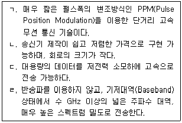
- ㄱ
- ㄱ, ㄴ
- ㄱ, ㄴ, ㄷ
- ㄱ, ㄴ, ㄷ, ㄹ
(정답률: 58%)
17. 5단 귀환 시프트 레지스터(Shift Register)로 구성된 PN부호 발생기의 출력 데이터 계열의 주기는?
- 5
- 16
- 31
- 32
(정답률: 72%)
18. 다음이 설명하는 용어는?
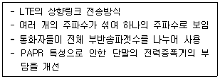
- OFDMA
- CDMA
- FDMA
- SC-FDMA
(정답률: 63%)
19. 12비트의 정보가 6ms마다 전송된다면 비트율[bps]은 얼마인가?
- 1000[bps]
- 1500[bps]
- 2000[bps]
- 2500[bps]
(정답률: 74%)
20. 어느 특정시간 동안 10,000,000개의 비트가 전송되고, 전송된 비트 중 2개가 오류로 판명되었을 때 이 전송의 비트 에러율은 얼마인가?
- 1×10-6
- 1×10-7
- 2×10-6
- 2×10-7
(정답률: 79%)
2과목: 정보통신기기
21. 국내 지상파 HDTV 방식에서 1채널의 주파수 대역폭은?
- 6[MHz]
- 9[MHz]
- 18[MHz]
- 27[MHz]
(정답률: 78%)
22. 이동통신시스템에서 단말기가 이동교환기 내에 있는 기지국에서 통화의 단절 없이 동일한 주파수를 사용하는 다른 기지국으로 옮겨 통화하는 경우에 해당되는 Handoff는?
- Hard Handoff
- Soft Handoff
- Dual Handoff
- Softer Handoff
(정답률: 73%)
23. 상업용 건축물에 빌딩자동화(Building Automation)를 구성하는 주요 시스템으로 가장 거리가 먼 것은?
- 빌딩안내 시스템
- 주차관제 시스템
- 홈네트워크 시스템
- 전력제어 시스템
(정답률: 69%)
24. 각 세대내에 설치되어 사용되는 홈네트워크사용기기들을 유무선 네트워크로 연결하고 세대망과 단지망 혹은 통신사의 기간망을 상호 접속하는 장치는?
- 홈게이트웨이
- 감지기
- 전자출입시스템
- 단지서버
(정답률: 75%)
25. 홀로그램(Hologram) 핵심기술의 주요 내용으로 가장 거리가 먼 것은?
- 실공간에 재현된 그래픽의 안경형 홀로그램 구현
- 실물에 대한 3차원 영상정보 활용하여 데이터 획득
- 대용량의 홀로그램픽 간섭 패턴을 컴퓨터로 고속 처리
- 홀로그램 데이터로부터 객체를 실공간에 광학적으로 재현
(정답률: 64%)
26. 다음 중 포트 공동 이용기(Port Sharing Unit)의 특징이 아닌 것은?
- 여러 대의 터미널이 하나의 포트를 이용하므로 포트의 비용을 줄일 수 있다.
- 폴링과 셀렉션 방식에 의한 통신이다.
- 컴퓨터와 가까운 곳에 있는 터미널이나 원격지 터미널에 모두 이용할 수 있다.
- 터미널의 요청이 있을 때 사용하지 않는 포트를 찾아 할당한다.
(정답률: 60%)
27. 회선을 보유하거나 임차하여 정보의 축적, 가중, 변환하여 광범위한 서비스를 제공하는 것은?
- CATV
- ISDN
- LAN
- VAN
(정답률: 70%)
28. 다음 중 DSU(Digital Service Unit)의 특징으로 틀린 것은?
- 디지털 정보를 디지털 신호로 변환한다.
- 디지털 정보를 장거리 전송하기 위해 사용한다.
- 양극성 신호를 단극성 신호로 변환하여 전송한다.
- 디지털 네트워크에서 사용하는 회선종단장치이다.
(정답률: 73%)
29. 주차관제시스템의 구축 시 고려사항으로 가장 거리가 먼 것은?
- 무인화 운영시스템으로 확장 고려
- 주차 가능 구역의 효율적 관리 방안
- 차량번호인식 에러율 최소화 방안
- 차량 정보는 개방형으로 자유롭게 확인
(정답률: 82%)
30. 다음 중 무선 통신 송신기의 구성 요소가 아닌 것은?
- 발진기
- 증폭기
- 변조기
- 복조기
(정답률: 68%)
31. CCTV 구성요소로 틀린 것은?
- camera
- DVR/NVR
- 전송장치
- 단말장치
(정답률: 53%)
32. 어느 멀티미디어 기기의 전송대역폭이 6[MHz]이고 전송속도가 19.39[Mbps]일 때, 이 기기의 대역폭 효율값은 약 얼마인가?
- 2.23
- 3.23
- 5.25
- 6.42
(정답률: 78%)
33. 다음 중 모뎀의 궤환시험(Loop Back Test) 기능과 관련된 것이 아닌 것은?
- 모뎀의 패턴발생기와 내부회로의 진단테스터
- 자국내 모뎀의 진단 및 통신회선의 고장의 진단
- 전송속도의 향상
- 상대편 모뎀의 시험인 Remote Loop Back Test도 가능
(정답률: 74%)
34. 다음 중 웨어러블(wearable) 디바이스가 갖춰야 할 기본 기능으로 틀린 것은?
- 항시성
- 가시성
- 저전력
- 경량화
(정답률: 72%)
35. 다음 중 스마트 미디어기기의 영상표출 디바이스로서 가장 거리가 먼 것은?
- HMD(Head Mounted Display)
- Smart Phone
- VR기기
- 화상스크린
(정답률: 65%)
36. 다음 중 FM수신기에서 주로 사용되는 잡음억제회로로 거리가 먼 것은?
- Limiter 회로
- Squelch 회로
- De-emphasis 회로
- Eliminator 회로
(정답률: 56%)
37. 다음 중 멀티미디어 화상회의 데이터를 TCP/IP와 같은 패킷망을 통해 전송하기 위한 ITU-T의 표준은?
- H.221
- H.231
- H.320
- H.323
(정답률: 66%)
38. 다음 중 EMS(에너지관리시스템, Energy Management System)에서 에너지 관리대상에 따른 분류로 가장 거리가 먼 것은?
- FEMS(Factory Energy Management System)
- CEMS(City Energy Management System)
- HEMS(Home Energy Management System)
- BEMS(Building Energy Management System)
(정답률: 63%)
39. 다음 중 스마트홈(Smart Home) 서비스를 구성하는 기술 구성요소가 아닌 것은?
- 스마트 단말(Device)
- 게이트웨이(Gateway)
- 스마트폰 애플리케이션
- CCTV 통합관제센터
(정답률: 74%)
40. 다음 보기는 전자 교환기의 동작 과정 중 일부이다. 보기의 동작 과정 순서로 옳은 것은?
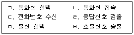
- ㄷ, ㅁ, ㄱ, ㄹ, ㄴ, ㅂ
- ㄷ, ㅁ, ㄱ, ㅂ, ㄹ, ㄴ
- ㄷ, ㅁ, ㄱ, ㄹ, ㅂ, ㄴ
- ㄷ, ㅁ, ㄱ, ㄴ, ㄹ, ㅂ
(정답률: 53%)
3과목: 정보통신 네트워크
41. TCP/IP 관련 프로토콜 중 응용 계층이 아닌 것은?
- SMTP
- ICMP
- FTP
- SNMP
(정답률: 52%)
42. 다음은 무엇에 대한 설명인가?
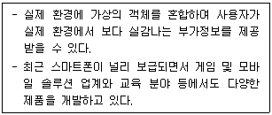
- 증강현실
- 가상현실
- 인공현실
- 환상현실
(정답률: 75%)
43. 다음 중 네트워크 내 혼잡현상을 해결하기 위해 사용되는 제어 기법이 아닌 것은?
- 패킷 폐기 방법
- 선택적 재전송 방법
- 버퍼 사전 할당 방법
- 쵸크 패킷 제어 방법
(정답률: 50%)
44. 다음 중 부가가치통신망(VAN)의 계층구조가 아닌 것은?
- 연산처리 계층
- 정보처리 계층
- 통신처리 계층
- 네트워크 계층
(정답률: 52%)
45. 다음 중 라우터에 대한 설명으로 옳은 것은?
- OSI 3계층 레벨에서 프로토콜 처리 능력을 갖는 Network 간 접속 장치이다.
- 단말기 사이의 거리가 멀어질수록 감쇄되는 신호를 재생시키는 장비이다.
- OSI 2계층에서 LAN을 상호 연결하여 프레임을 저장하고 중계하는 장치이다.
- OSI 4계층 이상에서 동작하며, 서로 다른 데이터 포맷을 가지는 정보를 변환해 준다.
(정답률: 71%)
46. 4[Gbps](상향 1[Gbps], 하향 3[Gbps])급 용량의 FTTH회선이 있다고 가정한다. 하향 회선을 기준으로 할 때 괄호 안에 들어갈 최대수용 가능한 가입자 수는 약 얼마인가?
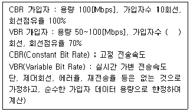
- 80
- 57
- 21
- 11
(정답률: 67%)
47. SNMP에서 이벤트를 보고하는 TRAP 메시지가 사용하는 포트번호는?
- 160
- 161
- 162
- 163
(정답률: 49%)
48. LAN의 채널 접근 방식에 따른 분류 가운데 무엇에 대한 설명인가?
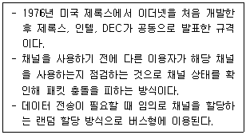
- CSMA/CD
- 토큰 버스
- 토큰 링
- 슬롯 링
(정답률: 66%)
49. 다음 중 네트워크 서브넷 마스크가 255.255.255.248 일 때 CIDR 표기법으로 표시하면 어떤 숫자인가?
- 32
- 30
- 29
- 28
(정답률: 51%)
50. 다음 중 네트워크 상에서 라우터가 멀티캐스트 통신 기능을 구비한 PC에 대하여 멀티캐스트 패킷을 분배하는데 사용하는 프로토콜은 무엇인가?
- ICMP(Inter Control Message Protocol)
- IGMP(Internet Group Management Protocol)
- Routing Protocol
- Switching Protocol
(정답률: 58%)
51. 10기가비트 이더넷(10 Gigabit Ethernet)의 설명 중 틀린 것은?
- 카테고리 3, 4, 5인 UTP 케이블 모두 사용 가능하다.
- LAN뿐만 아니라 MAN이나 WAN까지도 통합하여 응용할 수 있다.
- 기가비트 이더넷 보다 성능이 최대 10배 빠른 백본 네트워크이다.
- IEEE802.3 위원회에서 표준화하였다.
(정답률: 69%)
52. 다음 중 위성통신의 특징으로 틀린 것은?
- 운용 시 지연 시간이 발생하지 않는다.
- 회선설정이 유연하다.
- 서비스 지역이 광범위하다.
- 비용이 통신거리에 무관하여 경제적이다.
(정답률: 71%)
53. 다음 보기가 설명하고 있는 VLAN 트렁킹 프로토콜(Trunking Protocol)의 운용모드로서 적절한 것은?
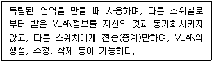
- 서버 모드(Server Mode)
- 클라이언트 모드(Client Mode)
- 엑세스 모드(Access Mode)
- 트랜스페이런트 모드(Transparent Mode)
(정답률: 57%)
54. 스위치 전송 방식 중에서 목적지 주소만 확인하고 전송을 진행하는 방식은?
- Store and forward 방식
- Cut-through 방식
- Fragment-free 방식
- Fittering 방식
(정답률: 62%)
55. PCM 통신방식에서 4[kHz]의 대역폭을 갖는 음성 정보를 8[bit] 코딩으로 표본화하면 음성을 전송하기 위해 필요한 데이터 전송률은 얼마인가?
- 4[kbps]
- 8[kbps]
- 32[kbps]
- 64[kbps]
(정답률: 60%)
56. 다음 중 IGP(Interior Gateway Protocol)로 사용하지 않는 라우팅 프로토콜은 어느 것인가?
- RIP(Routing Information Protocol)
- BGP(Border Gateway Protocol)
- IGRP(Interior Gateway Routing Protocol)
- OSPF(Open Shortest Path First)
(정답률: 50%)
57. 다음 중 IPv6의 주소 유형이 아닌 것은?
- Basiccast
- Unicast
- Anicast
- Multicast
(정답률: 71%)
58. 다음 중 회선교환방식에 비하여 패킷교환방식의 장점이 아닌 것은?
- 회선효율이 높아 경제적 망구성이 가능하다.
- 장애발생 등 회선상태에 따라 경로설정이 유동적이다.
- 실시간 데이터 전송에 유리하다.
- 프로토콜이 다른 이기종 망간 통신이 가능하다.
(정답률: 59%)
59. Mobile IP 서비스에서 사용되는 바인딩(binding)에 대한 설명으로 맞는 것은?
- HA(Home Agent)가 MN(Mobile Node)에게 데이터를 보내기 위해 터널을 연결하는 것
- COA(Care Of Address)와 MN(Mobile Node)의 홈 주소를 연결시키는 것
- HA(Home Agent)와 FA(Foreign Agent)가 자신이 어느 링크에 접속되어 있는지를 광고로 알리는 것
- FA(Foreign Agent)가 MN(Mobile Node)과 다른 MN(Mobile Node)을 연결시키는 것
(정답률: 50%)
60. 국내 공중통신망의 총괄국 아래 계위의 디지털 교환기들의 사용하고 있는 망동기 방식은?
- 단순 종속동기방식(SMS : Simple Master Slave)
- 계위 종속동기방식(HMS : Hierarchical Master Slave)
- 선지성 대체 종속동기방식(PAMS : Pre Assigned Master Slave)
- 자체 재배열 종속동기방식(SOMS : Self Organized Master Slave)
(정답률: 44%)
4과목: 정보시스템 운용
61. 다음은 어떠한 백업 명령을 실행하는 것인가?
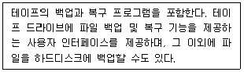
- cpio
- taper
- dump
- minix
(정답률: 68%)
62. 연축전지의 정격용량 200[AH], 상사부하 12[kW], 표준전압 100[V]인 부동충전방식의 충전기 2차 전류값은 얼마인가?
- 120[A]
- 140[A]
- 160[A]
- 200[A]
(정답률: 50%)
63. 출입보안시스템 제어부에서 분석한 감지신호를 유·무선 네트워크를 이용하여 관제센터로 전달하는 역할을 하는 요소는?
- 감시부
- 통신부
- 경보부
- 출력부
(정답률: 69%)
64. 클라우드 보안 영역 중 관리방식(Governance)이 아닌 것은?
- 컴플라이언스와 감사
- 어플리케이션 보안
- 정보관리와 데이터 보안
- 이식성과 상호 운영성
(정답률: 42%)
65. 장비간 거리가 증가하거나 케이블 손실로 인한 신호 감쇄를 재생시키기 위한 목적으로 사용되는 네트워크 장치는?
- 게이트웨이(gateway)
- 라우터(router)
- 브리지(bridge)
- 리피터(repeater)
(정답률: 66%)
66. 다음 중 물리적 보안을 위한 출입통제 방법이 아닌 것은?
- CCTV
- 보안요원 배치
- 근접식 카드 리더기
- 자동문 설치
(정답률: 65%)
67. 무선 네트워크 환경에서 보안을 담당하며, 관제-탐지-차단의 3단계 메카니즘으로 작동되는 것은?
- SSO(Single Sign On)
- Firewall
- IDS(Intrusion Detection System)
- WIPS(Wireless Intrusion Prevention System)
(정답률: 51%)
68. 내부 네트워크와 외부 네트워크 사이에 있는 하드웨어와 소프트웨어로 구성되며 보통은 라우터나 서버 등에 위치하는 소프트웨어는?
- IDS
- VPN
- Firewall
- TCP/IP 보안
(정답률: 58%)
69. 다음 보기의 업무는 ISMS(Information Security Management System)의 어떤 단계에서 수행하는 업무인가?
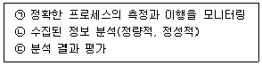
- 계획 : ISMS 수립
- 수행 : ISMS 구현과 운영
- 점검 : ISMS 모니터링과 검토
- 조치 : ISMS 관리와 개선
(정답률: 73%)
70. 써지보호기(Surge Protector)의 써지 피해 보호 종류 중 전원 계통에 인입된 써지의 억제와 관련된 것을 모두 고른 것은?
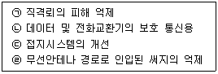
- ㉠, ㉡
- ㉠, ㉡, ㉢
- ㉡, ㉢, ㉣
- ㉠, ㉡, ㉣
(정답률: 47%)
71. 통신망(Network) 관리 중 아래 내용에 해당되는 것은?
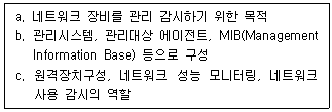
- SNMP(Simple Network Management Protocol)
- TMN(Telecommunications Management Network)
- SMAP(Smart Management Application Protocol)
- TINA-C(Telecommunication Information Network Architecture Consortoum)
(정답률: 68%)
72. 데이터베이스 시스템을 구성하는 기본요소가 아닌 것은?
- 메타데이터
- 응용프로그램
- DBMS(DataBase Management System)
- 컴파일러
(정답률: 66%)
73. 통신망 계획시 검토사항이 적절하지 않은 것은?
- 설비의 신뢰성 : 통신망의 환경조건 분석, 설치 운용사례수집
- 수요 및 트래픽 분석 : 트래픽(Traffic)의 종류, 이용자의 성향분석
- 이용자의 성향분석 : 최한시(Idle Hour) 기준의 트래픽 설계, 멀티미디어서비스 이용 동행
- 기술적 특성 및 전망 : 인터페이스 조건, 기술발전추세 부합여부
(정답률: 65%)
74. 다음 보기에서 설명하고 있는 내용으로 적합한 것은?
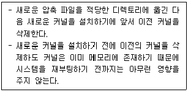
- 긴급 복구 디스켓 만들기
- boot 파티션 점검
- 커널 튜닝 적용
- Openwall 커널 패치 적용
(정답률: 60%)
75. 물리적 보안 시스템인 CCTV 관제센터 설비 구성요소가 아닌 것은?
- DVR 및 NVR
- 영상 인식 소프트웨어
- 바이오 인식 센서
- IP 네트워크
(정답률: 70%)
76. 서버의 디렉토리에 있는 각종 설정값을 조절하여 리눅스 커널의 가상 메모리(VM) 하위 시스템 운영을 조정할 수 있는데 설정 값에 해당되지 않는 것은?
- overcommit_config
- page-cluster
- pagetable_cache
- kswapd
(정답률: 48%)
77. 다음 중 초고속정보통신건물 인증제도에서 말하는 집중구내통신실(MDF실)의 설명으로 틀린 것은?
- 관계자외 출입통제 표시 부착
- 유효면적은 실측
- 유효높이 1.8M 이상 잠금장치가 있는 방화문 설치
- 침수 우려가 없는 지상에 설치
(정답률: 65%)
78. 관리하고자 하는 네트워크 장비들에 대한 감시와 제어를 수행하는 시스템은?
- 에이전트
- 네트워크 관리 시스템
- 호스트
- 네트워크 장비
(정답률: 70%)
79. 다음 중 정보통신시스템 유지보수 활동의 유형에 해당되지 않는 것은?
- 준공 시 정보통신시스템 성능의 유지관리
- 잘못된 것을 수정하는 유지보수
- 시스템 구축을 위한 유지보수
- 장애발생 예방을 위한 유지보수
(정답률: 59%)
80. httpd.conf 파일 설정 항목에 대한 설명으로 틀린 것은?
- ServerTokens는 클라이언트의 요청에 따라 웹서버가 응답하는 방법을 설정한다.
- Timeout은 클라이어트가 요청한 정보를 받을 때까지 소요되는 초 단위 대기 사긴의 최대값을 의미한다.
- ServerAdmin은 웹서버에 문제가 생겼을 때 클라이언트가 메일을 보내는 웹서버 과리자의 이메일 주소를 설정한다.
- ErrLog는 웹서비스를 통해 사용자에게 보일 HTML 문서가 위치하는 곳의 디렉토리를 설정한다.
(정답률: 58%)
5과목: 컴퓨터일반 및 정보설비기준
81. 운영체제가 추구하는 목적에 적합한 것은?
- 사용자의 독점성과 자원의 효율적 이용
- 사용자의 편리성과 자원의 독점적 이용
- 사용자의 독점성과 자원의 독점적 이용
- 사용자의 편리성과 자원의 효율적 이용
(정답률: 77%)
82. 다음 중 정보통신공사를 발주하는 자가 용역업자에게 설계를 발주하지 않고 시행할 수 있는 경우에 해당하지 않는 것은?
- 기존설비를 교체하는 공사로서 설계도면의 새로운작성이 불필요한 공사
- 통신구설비공사
- 비상재해로 인한 긴급 복구공사
- 50회선 이상의 구내통신선로설비공사
(정답률: 69%)
83. 하둡(Hadoop)에 대한 설명으로 맞는 것은?
- 신뢰할 수 있고, 확장이 용이하며, 분산 컴퓨팅 환경을 지원하는 오픈 소스 소프트웨어이다.
- 인공지능 과정을 통해 분석 결과를 해석하고, 의사결정할 수 있는 지능을 가진 인간과 유사한 시스템이다.
- 데이터 웨어하우징을 통해, 서버, 스토리지, 운영체제, 데이터베이스, 데이터 마이닝 등이 통합된 제품이다.
- 비관계형 데이터베이스로 데이터를 테이블에 저장하지 않는 데이터베이스이며 관계형과는 대조적인 개념이다.
(정답률: 56%)
84. 다음 중 네트워크 통신 시에 허락되지 않은 사용자나 객체가 통신으로 전달되는 정보를 함부로 수정할 수 없도록 하는 것은?
- 무결성
- 기밀성
- 가용성
- 클라이언트 인증
(정답률: 67%)
85. 특정한 짧은 시간 내에 이벤트나 데이터의 처리를 보증하고, 정해진 기간 안에 수행이 끝나야 하는 응용 프로그램을 위하여 만들어진 운영 체제는?
- 임베디드 운영 체제
- 분산 운영 체제
- 실시간 운영 체제
- 라이브러리 운영 체제
(정답률: 60%)
86. 다음 중 정보통신공사의 설계도에 대한 보관기준을 설명한 것으로 잘못된 것은?
- 공사에 대한 실시·준공설계도서는 공사의 목적물이 폐지될 때까지 보관
- 실시·준공설계도서가 변경된 경우에는 변경 전후 실시·준공설계도서 모두 보관
- 공사를 설계한 용역업자는 그가 작성 또는 제공한 실시설계도서를 해당 공사 준공 후 5년간 보관
- 공사를 감리한 용역업자는 그가 감리한 공사의 준공설계도서를 하자담보책임기간 종료시까지 보관
(정답률: 60%)
87. 다음 중 다음에 실행할 명령의 주소를 기억하여 제어 장치가 올바른 순서로 프로그램을 수행하도록 하는 정보를 제공하는 레지스터는?
- 명령 레지스터(IR)
- 프로그램 계수기(PC)
- 기억장치 주소 레지스터(MAR)
- 기억장치 버퍼 레지스터(MBR)
(정답률: 53%)
88. 다음 중 과학기술정보통신부장관이 전기통신번호 자원 관리계획을 수립·시행하는 목적으로 볼 수 없는 것은?
- 전기통신역무의 효율적인 제공을 위하여
- 통신기술인력의 양성사업을 지원하기 위하여
- 이용자의 편익을 위하여
- 전기통신사업자간의 공정한 경쟁환경의 조성을 위하여
(정답률: 59%)
89. 10진수 0.375를 2진수로 맞게 변환한 값은?
- 0.111
- 0.011
- 0.001
- 0.101
(정답률: 57%)
90. 다음 중 방송통신설비의 운용자와 이용자의 안전 및 방송통신서비스의 품질향상을 위하여 규정한 단말장치의 기술기준이 아닌 것은?
- 방송통신망 또는 방송통신서비스에 대한 장애인의 용이한 접근에 관한 사항
- 전송품질의 유지에 관한 사항
- 전화역무 간의 상호운용에 관한 사항
- 전기통신망 유지 및 보수자의 안전에 관한 사항
(정답률: 46%)
91. 바이트(8bit) 단위로 주소지정을 하는 컴퓨터에서 MAR(Memory Address Register)과 MDR(Memory Data Register)의 크기가 각각 32비트이다. 512Mb(Megabit) 용량의 반도체 메모리 칩으로 이 컴퓨터의 최대 용량으로 주기억장치의 메모리 배열을 구성하고자 한다. 필요한 칩의 개수는?
- 8개
- 16개
- 32개
- 64개
(정답률: 52%)
92. 다음 중 아날로그 신호를 디지털 신호로 전환하고, 디지털 신호를 아날로그 신호로 전환해주는 장치는 어느 것인가?
- 마우스(Mouse)
- 전자태크(RFID)
- 스캐너(Scanner)
- 모뎀(Modem)
(정답률: 77%)
93. OSI 7계층 모델 중 각 계층의 기능에 대한 설명으로 틀린 것은?
- 물리 계층 – 전기적, 기능적, 절차적 기능 정의
- 데이터 링크 계층 – 흐름제어, 에러제어
- 네트워크 계층 – 경로 설정 및 네트워크 연결 관리
- 전송 계층 – 코드 변환, 구문 검색
(정답률: 69%)
94. 다음 중 네트워크 계층에서 전달되는 데이터 전송 단위로 옳은 것은?
- 비트(Bit)
- 프레임(Frame)
- 패킷(Packet)
- 데이터그램(Datagram)
(정답률: 72%)
95. 다음 보기의 IP주소는 어느 클래스에 속하는가?
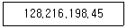
- A class
- B class
- C class
- D class
(정답률: 65%)
96. 다음 지문은 인터럽트 처리과정을 나타낸 것이다. 처리과정의 순서를 올바르게 나열한 것은?
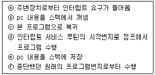
- ⓐ→ⓓ→ⓑ→ⓒ→ⓕ→ⓔ
- ⓐ→ⓔ→ⓓ→ⓑ→ⓒ→ⓕ
- ⓔ→ⓐ→ⓓ→ⓑ→ⓒ→ⓕ
- ⓔ→ⓐ→ⓑ→ⓓ→ⓒ→ⓕ
(정답률: 68%)
97. 다음 중 정보통신공사업법 시행령에서 규정하고 있는 초급감리원의 자격등급으로 적정하지 않은 것은?
- 기능사자격을 취득한 후 6년 이상 공사업무를 수행한 사람
- 고등학교를 졸업한 후 6년 이상 공사업무를 수행한 사람
- 2년제 전문대학을 졸업한 후 4년 이상 공사업무를 수행한 사람
- 학사학위 이상의 학위를 취득한 후 3년 이상 공사업무를 수행한 사람
(정답률: 49%)
98. 다음 중 전기통신설비를 공동 구축할 수 있는 대상은?
- 국가 또는 지방자치단체와 국민 사이
- 전기통신사업자와 전기통신이용자 사이
- 기간통신사업자와 자가통신사업자 사이
- 기간통신사업자와 다른 기간통신사업자 사이
(정답률: 64%)
99. 영상정보처리기기의 설치·운영 제한규정에 맞지 않는 것은?
- 영상정보처리기기운영자는 영상정보 이외에 녹음기능을 사용할 수 있다.
- 영상정보처리기기운영자는 개인정보가 분실·도난·유출·위조·변조 또는 훼손되지 아니하도록 안전성 확보에 필요한 조치를 하여야 한다.
- 영상정보처리기기운영자는 대통령령으로 정하는 바에 따라 영상정보처리기기 운영·관리 방침을 마련하여야 한다.
- 영상정보처리기기운영자는 영상정보처리기기의 설치·운영에 관한 사무를 위탁할 수 있다.
(정답률: 66%)
100. 개인의 컴퓨터나 기업의 응용서버 등의 컴퓨터 데이터를 별도 장소로 옮겨 놓고, 네트워크를 연결하여 인터넷 접속이 가능한 다양한 단말기를 통해 언제 어디서나 데이터를 이용할 수 있는 사용자 환경은?
- 클라우드 컴퓨팅
- 빅데이터 컴퓨팅
- 유비쿼터스 컴퓨팅
- 사물인터넷 컴퓨팅
(정답률: 73%)
설명: 스마트 안테나는 공간신호를 인식하여 스마트 신호처리 알고리즘을 사용하는 안테나 배열을 의미한다. MIMO, Switched beam array antenna, Adaptive array antenna는 모두 스마트 안테나의 종류이다. 그러나 SISO는 하나의 안테나로 하나의 신호를 처리하는 안테나이므로 스마트 안테나의 종류가 아니다.